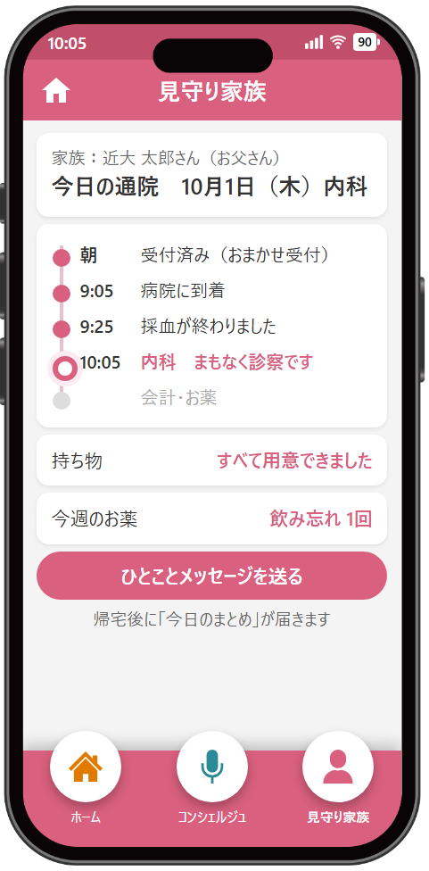
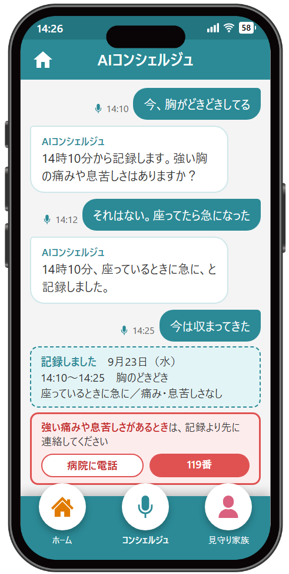
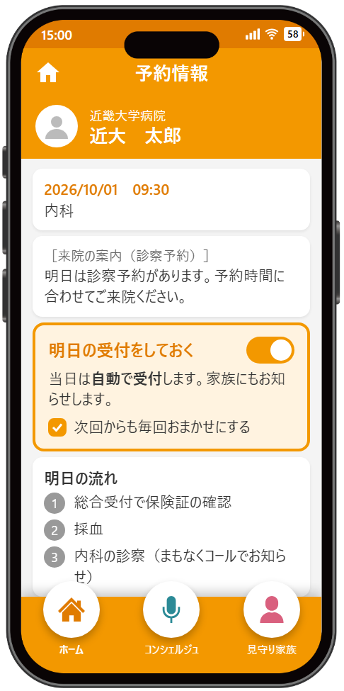
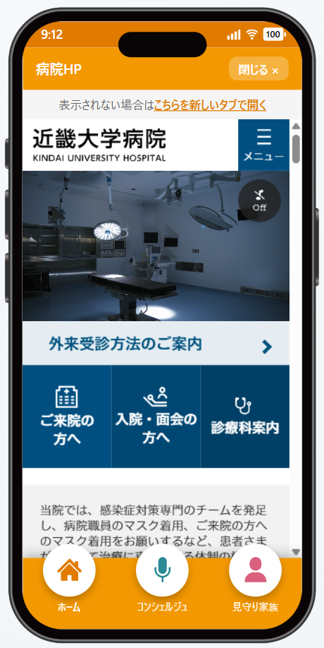
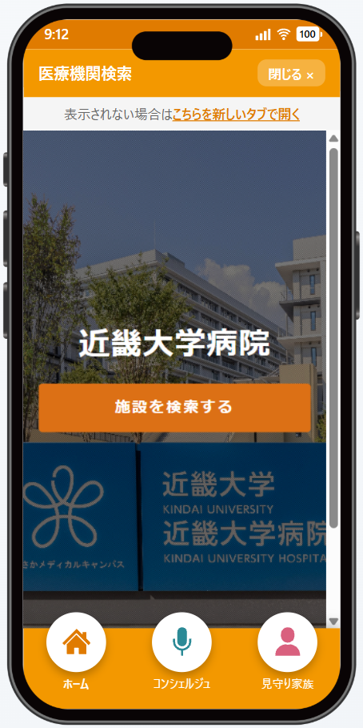

提案内容をブラウザ上で実際に操作できるモックアップです。下のボタンから開いて、本人画面と見守り家族画面の連動をお試しください。
472915 で家族側の画面を体験する近畿大学病院公式アプリは、ブース設置やノベルティ配布など病院側の施策を重ねても、特に70歳以上の方からは次のような声が残っています。
「使い方が難しい」「診察券があるからアプリは不要」「月に1度しか来ないので入れなくていい」「めんどくさい。アプリは分からない」
本人が来院したときに、窓口やアバター受付で本人の同意を確認して、家族用の招待コードを発行します。家族は病院に来なくても、自分のスマホにコードを入れるだけで登録できます。本人がスマホを使うのが苦手でも、家族が使うことで本人も楽に通院できるようになります。

アプリの中に、話しかけるだけで使えるAIを設置します。服薬サポート・症状の記録・診察前のメモ・持ち物チェック・操作の代わりの5つを担当。通院は月に1回でも薬は毎日飲むので、これがアプリを毎日開くきっかけになります。
※ AIコンシェルジュが記録した症状等の情報は、端末内にのみ保存され、病院など外部に自動で送信されることはありません。症状等の記録は個人情報保護法上の要配慮個人情報にあたり、第三者への提供には本人の同意が必要とされているためです。見守り家族への共有は本人の同意（招待登録）を前提とした範囲にとどまり、医師に見せたい場合は受診時に本人の意思で画面を提示する想定です。

前日に届く予約通知に「明日の受付をしておく」ボタンを設置。押しておけば当日は自動で受付が済みます。一度オンにすれば次からも自動になるため、当日の朝に操作する必要がなくなります。

AIコンシェルジュは便利ですが、会話のたびにAPIコストが発生するため、「何でもAIに聞けばいい」となると運用コストも増大してしまいます。
We'll Beの考え方では、見守り家族の機能を用意することで、ちょっとした声かけやAIに聞かなくても家族とのやり取りで解決できる内容を家族側に振り分けられるようにしています。見守り家族という本人と家族の接点を作ると同時に、AIコンシェルジュへの問い合わせを必要な場面に絞り、トークン消費・API呼び出し回数を抑えられる設計になっています。
現状のアプリは、外部サービスへの遷移が多い状態でした。特に「診察呼出状況」は licarenote.jp という別サービスに飛び、せっかく診察券番号でログインしているのに受付番号を自分で手入力し直す必要があります。
ブラウザに飛ばされるたびに「ログインが外れた」と誤解したり、戻り方が分からなくなったりします（特に高齢者）。アプリとブラウザを行き来する手間そのものが離脱の原因になっていると考えました。


| 機能 | 遷移先 | 方針 |
|---|---|---|
| 診察呼出状況 | licarenote.jp（外部サービス） | アプリ内完結 |
| 採血状況・放射線検査・お薬状況・診療情報・予約変更依頼 | 各種手続き・状況確認 | アプリ内完結 |
| 医療機関検索／病院HP／近大ラジオ | 外部サイト | |
| フロアマップ／交通案内（泉ヶ丘） | 院内情報（モーダル表示） | アプリ内完結 |
「家族とAIがそばにいる」を実現する前に、まず「アプリの中で迷子にならない」＝アプリ内完結を徹底します。手続き・状況確認（受付・呼出・会計・薬）やフロアマップ・交通案内はアプリ内に閉じ、医療機関検索・病院HP・近大ラジオのような外部サイトも、ブラウザへ丸ごと放り出すのではなくアプリ内の埋め込み表示（閉じるボタン付き）として開く形にしています（上の2枚が実際に表示した画面です）。